主题皮肤的画框：菜单与设置窗口
书房目前只换了窗口里的内容区、活动栏和配色，弹出的菜单与设置窗口还是普通的圆角面。这一轮试的是“画框”：给这两类浮层加一道跟皮肤配色走的装饰边。
图都是真实产品里的书房主题截图，装饰边是临时样式叠上去的原型，没有进产品代码。选定后再做成皮肤声明里的正式字段。无画框是现状对照。
要看清楚：设置窗口本身是半透明玻璃面，能透出后面的内容，所以窗口上的装饰边比菜单上的更不显眼。
画框用哪一种样式 待定
A：双线框
里面一圈面色细缝，再一道强调色的细线，像账本或书页的内框。菜单里最清楚，两套明暗都不抢字。
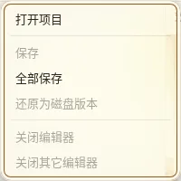
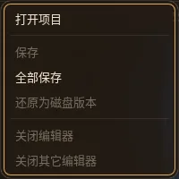
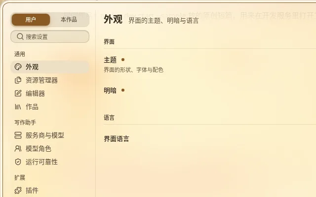
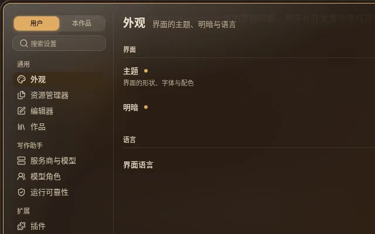
B：四角
只在四个角各画一对 L 形短线，其余没有边。最轻，但在设置窗口里几乎看不出来。
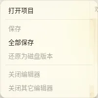
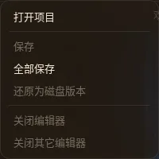
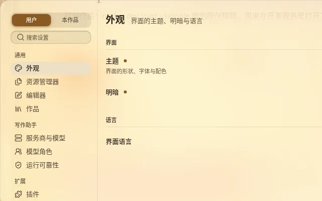
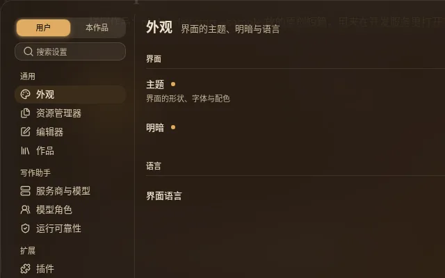
C：宽边
一圈偏暖的纸边加一道细线，像画框的衬纸。比 A 更厚重，菜单的可用宽度会少几像素。
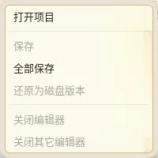
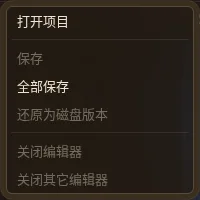
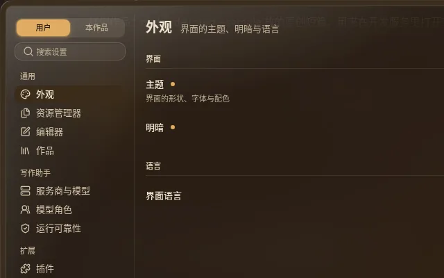
D：不做画框
现状：菜单与窗口保持普通圆角面。


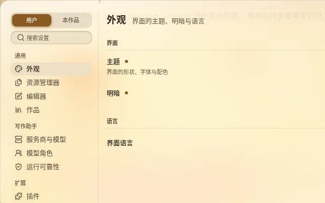
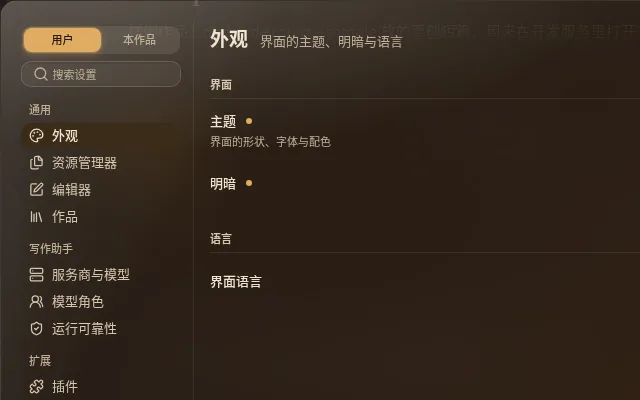
推荐：A。装饰边只用皮肤自己的配色（强调色加面色），不需要新素材，换配色就跟着变；菜单上看得清，对文字的可读性没有影响。
画框加在哪些浮层上 待定
菜单、气泡、对话框与设置窗口都加
所有浮出来的面一个样，皮肤感一致。小提示（悬停的短提示）不加。
只加对话框与设置窗口
菜单保持干净，只有大块的窗口有画框。
只加菜单
窗口保持现状。
推荐：全加。这几类面在设计语言里本来就共用同一个基座，分开加反而显得不统一。
还有什么想说的
比如想要更像书页、卷轴或木框的边，可以写在这里；那类需要图片素材，会排在书房素材定稿之后。